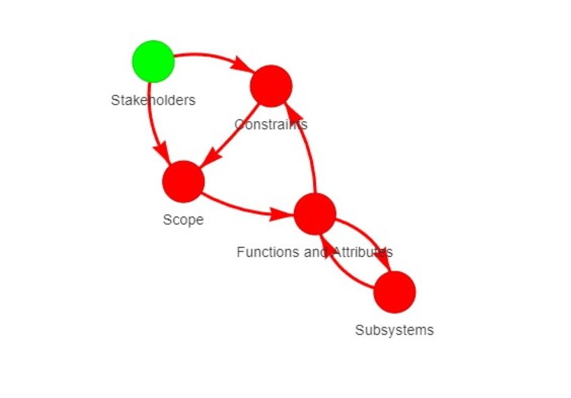

Using LLMs
In my capstone project, my team collaborated with a professor and a Ph.D. student to develop a tool designed to offer feedback to first-year engineering students on their reports before submitting them for grading. Our objective was to create a tool that could also be used by instructors to track student submissions and pinpoint weaknesses in the reports. In essence, our project's core idea revolved around utilizing large language models trained on pre-existing engineering reports. We aimed to determine whether these reports contained adequate information and essential elements. Subsequently, our tool would generate feedback through an interactive plot, illustrating how these various elements should be interconnected and whether the students had effectively addressed each element in their reports.
In the project's backend, we began by segmenting different sections of the reports. Each section of the report was expected to contain specific elements, and the clustering process aimed to match individual sentences with the appropriate elements. Afterward, each sentence was transformed into a vector and assigned a relevant label. Additionally, we stored previous engineering reports in vectorized form to be used alongside a Large Language Model (LLM). To assess the quality of the input reports, we compared them to the stored reports. This comparison involved calculating the cosine similarity score, which determined how closely the input report resembled previously recognized high-quality engineering reports. We established a threshold value to distinguish between sections of the report that met the quality criteria and those that required improvement. This process allowed for the automated evaluation of student reports and the provision of targeted feedback.
In the front end of the project, Django was employed to enable the execution of Python code through functions. The user interface was designed with a login option, differentiating between instructors and students, and assigning appropriate permissions for each user category. The system was connected to an SQL database, which stored a repository of all the past reports, submissions, and their associated scores. For students, the interface allowed them to upload their entire reports either in document form or by copying and pasting the text. Upon submission, students were presented with a graphical representation of their report, with each node on the graph providing feedback regarding its quality, indicating whether it met the required standards or needed improvement. The system stored the submissions, enabling instructors to access each student's submissions and review the feedback provided. This feature facilitated the identification of potential misunderstandings or areas of improvement within the class.